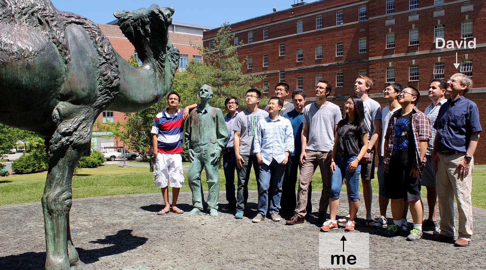
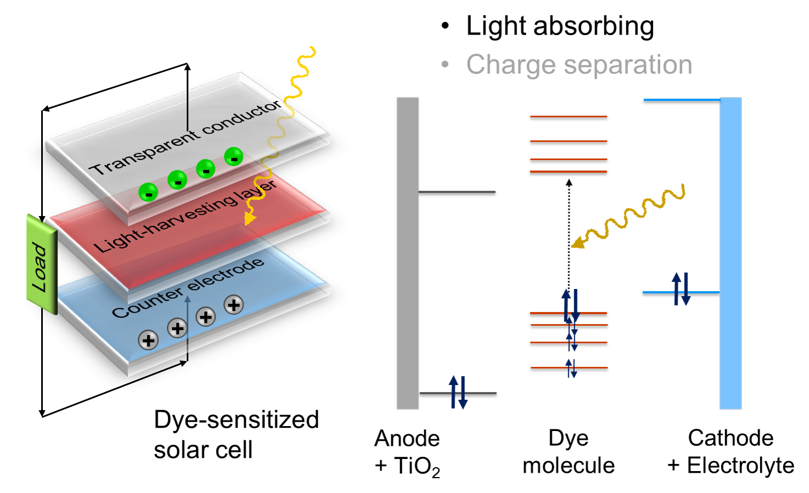
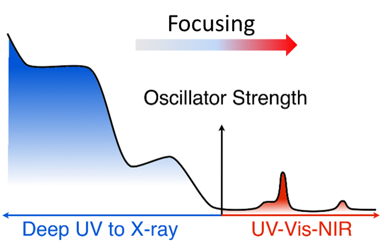
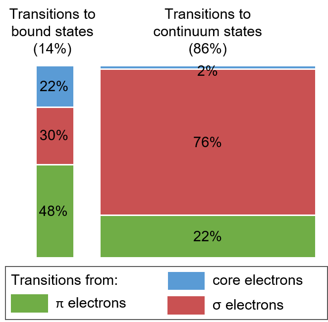

▲ Beratan Research Group ▲
I am working in a computational chemistry group (advisor: Dr. David N. Beratan), using atomistic and coarse-grained models (ranging from quantum mechanics to classical molecular dynamics) to study the light absorption properties and charge transport mechanisms in materials science and biology. From a technical point of view, I am developing algorithms to improve the methods, and applying parallel computing skills to speed up the calculations. Statistical methods and data analysis techniques are also applied for results evaluation.
In summary, my research projects are the following:
- 2018 – Now
- Improving the fluorescence intensity of red fluorescence proteins via local electric field created by targeted mutations of charged residues.
- 2017 – Now
- Investigating the mechanism of charge transports in self-assembled cyclic peptide nanotubes.
- 2015 – 2017
- Explored the physics underpinning the orders of magnitude enhancement of polyene light absorption induced by electrostatic fields.
- 2015 – 2017
- Designed linear absorbers based on the quantum-optical analogy.
- 2014 – 2015
- Investigated the oscillator strength distributions in quantum models and in molecules, and rationalized the low absorption in the UV/Vis spectral region in molecules.
Below are the details of each project.
One of the main projects I was working on is to enhance the light absorption of dye molecules used in solar energy conversion devices, which transform the excitation energy into energy stored in free carriers or chemical bonds. One example of such devices is dye-sensitized solar cells, like the scheme below:

A quantity that evaluates their ability to absorb light at a certain wavelength is called oscillator strength, which is related to the absorbance in the spectra. The Thomas-Reiche-Kuhn (TRK) sum rule mandates that the integrated (electronic) oscillator strength of an absorber equals the total number of electrons in the structure. Typical molecular chromophores place only about 1% of their oscillator strength in the UV-vis window, so individual chromophores operate at about 1% of their theoretical limit. The distribution of the oscillator strength (or absorption) for a typical chromophore looks like the following:

Our ultimate goal is developing purposeful strategies to redistribute and focus oscillator strengths into specific excitation energy windows.
We have rationalized the low oscillator strength in the UV-vis spectral region in molecules by mapping how the oscillator strength in popular molecular absorbers is distributed over transitions to valence excited states, Rydberg states, and continuum states. Specific conclusions are summarized below:

We found that any electronic structure-based strategy for focusing oscillator strength into the UV-vis region must effectively shut down core-to-bound and σ-to-continuum transitions. To perturb molecular electronic structure, such strategies might employ tailored electromagnetic fields, structural redesign of chromophores and chromophore assemblies, and tailored molecule-nanostructure assemblies. Even a modest focusing of the UV-vis oscillator strength, achieved via design, could dramatically increase the efficiency of current photovoltaic devices.
Details see: J. Phys. Chem. A 2016, 120, 1933-1943.
More under construction!